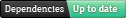
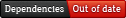

David helps keep your Nodejs project dependencies up to date.
Your project depends on other projects. It's unavoidable. You don't want to reinvent the wheel. Good. With that established it seems reasonable to assume that you'd like to be using the latest and greatest versions of your dependencies. There are reasons for this: security fixes, bug fixes, optimisations, obsessive compulsion, new functionality...etc. but how do you know when your dependencies are out of date?
Daivd shows you a list of your project dependencies, the version you depend on and the latest version so you can quickly see which ones you need to update. Each project also has a badge that shows the current dependency status of your project, which you can embed on your website, company intranet, or GitHub README.
 Can I have a David?
David is a free service for open source projects hosted on GitHub. The only other requirement is that your project includes a package.json file in it's root. Visit http://david-dm.org/[username]/[repo]/ to see a list of in date and out of date dependencies your project uses. Here's some examples:
How do I get the badge thing?
Your badge is at http://david-dm.org/[username]/[repo]/status.png
David is currently in ALPHA, which means it may be unreliable, unavailable or not working.
Tweet